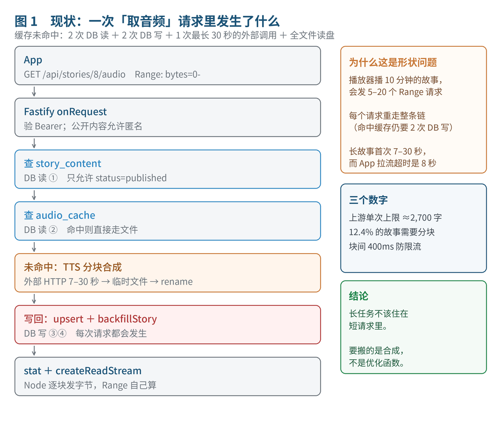
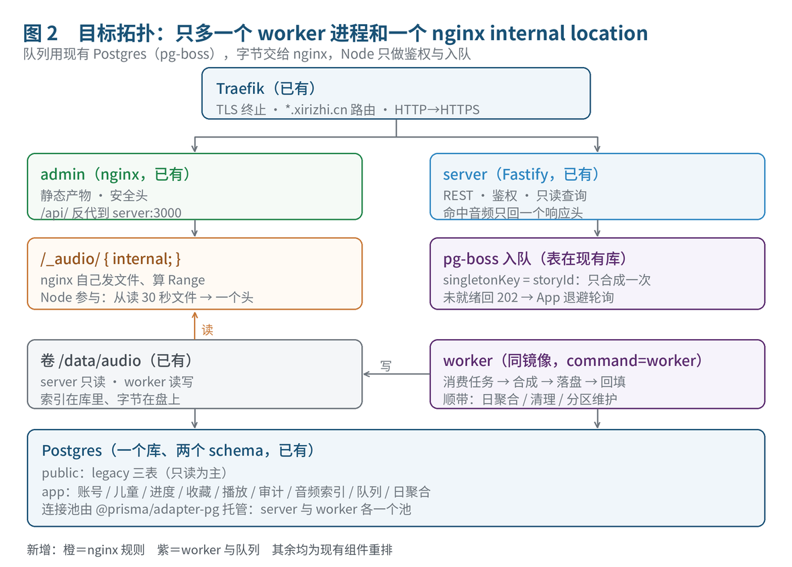

研究时间：2026-11-15 | 研究对象：guicaiyue/story（HEAD 在 2026-11-14 恢复
apps/app之后） | 方法：横纵分析法 —— 先看架构形状是怎么被历史逼成现在这样的（纵向），再把它放进 2026-11-15 的开源生态里逐层对照（横向），最后给出「变什么、不变什么、凭什么」的方案。开源项目的活跃度与版本取自当天 GitHub API 实测，不是记忆。
上一份报告回答的是「哪里疼」；这一份只回答一件事：架构和技术的形状该怎么动，以及哪些地方我想清楚了不该动。
一句话结论：这个项目的架构问题不在"用了什么"，在"所有事都发生在同一个进程的同一条请求里"。 于是目标不是换技术栈，而是把三件事从请求路径上剥出去 —— 重活（TTS 合成）、字节（音频传输）、发布（镜像与迁移）。我把它叫作三个分离。
| # | 现状的隐含假设 | 什么时候会破 | 目标形状 | 关键开源项目 |
|---|---|---|---|---|
| 1 | 「合成音频」可以放在 HTTP 请求里同步做完 | 故事超过约 2,700 字，或并发 2 个以上 | server 入队 → worker 消费 → 202 + 轮询 | pg-boss（4.1k★，v12.38.2 / 2026-11-10） |
| 2 | 「发音频字节」这件事该由 Node 做 | 播放器一次播放发 5–20 个 Range 请求 | nginx internal + X-Accel-Redirect，Node 只发一个头 | nginx（已装，零新增） |
| 3 | 「上线」等于在一台机器上敲五个命令 | 要回滚，或第二个人要上线 | 不可变镜像（GHCR + revision label）+ 迁移独立 job | Dokploy（38.5k★，v0.31.2 / 2026-11-13）可选 |
| 4 | 前后端各有一份「接口长什么样」 | 服务端改一个字段，前端静默漂移 | zod 共享包（packages/contract）+ OpenAPI 导出 |
openapi-typescript（8.4k★）/orval（6.6k★） |
| 5 | 播放事件表可以无限长 | 半年后看板变慢，删除时锁表 | 按月分区 + 保留策略 | pg_partman（2.9k★，v5.5.0） |
| 6 | 标题搜索可以 ILIKE '%q%' 全表扫 |
内容超过 2 万条 | pg_trgm GIN 索引（零代码改动） | PostgreSQL contrib，无需新项目 |
| 7 | 「出事会有人知道」靠人想起来跑 status | 探针指向的容器已经不存在了 | 探针 + 告警 + 死信开关 | Uptime Kuma（94.1k★）/healthchecks（10.5k★） |
| 8 | 备份 = 一份同机 pg_dump |
需要「回到昨天 14:00」而不是「回到昨天」 | WAL 归档 + PITR + 异地副本 | pgBackRest（4.5k★）+ restic（37.2k★） |
没变的部分（每条都有理由，见 §4）：Fastify 5、Prisma 7、pnpm workspaces、Traefik、Postgres 单库、Flutter + provider、antd 5→6、自研运营后台、自研迁移账本（短期保留）。
判断：不需要引入的新东西 —— Redis、K8s、MinIO、消息中间件、tRPC、Turborepo、SigNoz/Loki 全家桶、refine。理由逐条写在 §4 与 §6.4。
要看懂「为什么是现在这个形状」，得先看它是怎么被一步步逼出来的。这个项目的架构不是设计出来的，是被约束挤出来的。
第一形态（2025-04 → 2026-09）：纯前端 + 托管数据。 一个 index.html 加 app.js，数据从公开 API 换到 supabase 客户端直连，再换到 pREST。这个阶段的架构特征是「浏览器即应用，数据库即 API」：没有服务端，所有逻辑在浏览器里，所有权限在数据库里。add.html 时期甚至让网页直接写库。
它的技术合理性在当时成立：一个人、一个静态站、零运维成本。它的失败方式也很典型：当一个前端开始需要「谁在看、看到哪、看了多久」这些关系时，客户端直连数据库就没有地方放业务规则了。pREST 那次实测把这个洞摊开了 —— 写方法能穿透 WAF 到 Postgres，还以超级用户身份执行。
第二形态（2026-11-09 → 11-12）：单体 Fastify + 共库直读。 决策 D1/D3 定的路子是「不迁移数据、Prisma 直读 legacy 三表、新表进独立 app schema」。这个决定把架构锁成了一个贴着数据库长的服务端：没有 repository 层（service 直接拿 PrismaClient）、没有 DTO 层（zod schema 就是契约）、没有事件总线。
四天出三端，靠的正是这种「不抽象」：每一层都可以省掉，因为只有一个人在写。
第三形态（2026-11-13）：加了一层边缘。 Traefik 接管 TLS 与域名，server/admin 两个容器各自 healthy，音频挂在 Fastify 里流式发。这一层是必要的，也是唯一「多出来」的基础设施。
第四形态（2026-11-14）：删掉一整个版本。 D9 删掉 1.0 之后，仓库从「双栈并行」变成「三端单栈」：apps/server、apps/admin、apps/app。
四次形态变化，有一条隐藏的规律：每次都是"减少一层"而不是"增加一层" —— 删掉 supabase、删掉 pREST、删掉 1.0、删掉中间抽象。这让项目在极小规模下跑得飞快，也意味着它从来没有为"多个进程"设计过。而现在唯一真正卡住它的，恰恰就是这一点：TTS 合成被塞进了请求里。

一个"读"接口，在缓存未命中时做了 3 次数据库写 + 1 次外部 HTTP（可能 30 秒）+ 1 次全文件读盘；命中缓存时也还有 2 次写。而播放器播一首 10 分钟的故事，会发 5–20 个 Range 请求 —— 每一个都重新走一遍上面这条链。
这就是"形状问题"最具体的样子：不是某个函数写得不好，是一个长任务住在了一条短请求里。
我按「一个部署在单台 NAS 上、单库、面向家庭的小型内容服务」这个真实约束去比，而不是拿大厂架构当标杆。
| 参照物 | 它们的形状 | 对本案的意义 |
|---|---|---|
| Audiobookshelf（自托管有声书，~10k★ 量级） | Node 单体 + SQLite/Postgres + 文件系统为主存储，封面/音频都是静态文件，由 node 直接 serve，扫描器是后台 job | 和本项目最像。它把「扫描/转码/元数据」全部放后台 job，请求路径只做查询与文件流 —— 正是本项目该走的方向 |
| Navidrome / Airsonic（音乐流服务） | 单进程 + 索引库 + 流式 Range 由进程内发，靠 sendfile/io.Copy 压低开销 |
说明「进程内发字节」在小规模下可行，但前提是没有重活在同一条路径上 |
| Calibre-Web / Komga | Python/Java 单体 + 静态文件 + 反代 | 说明「应用 + 反代分工」是这类系统的默认形态 |
三条可比的经验，都不涉及大规模：① 重活异步化；② 字节交给最擅长的层；③ 索引（元数据）与内容（文件）分开存。
| 用途 | 项目 | ★ | 最近提交 | 最新版本 | 判断 |
|---|---|---|---|---|---|
| 任务队列（Postgres 内） | pg-boss | 4,141 | 2026-11-13 | v12.38.2（11-10） | 选它：无需 Redis，事务内入队 |
| 任务队列（Postgres 内） | graphile/worker | 2,444 | 2026-11-05 | — | 备选，偏 GraphQL 生态 |
| 任务队列（Redis） | BullMQ | 大 | 活跃 | — | 不选：为它多跑一个 Redis 不值 |
| 迁移 | dbmate | 7,546 | 2026-11-14 | v2.38.1（11-09） | 轻量、带 down、事务化 |
| 迁移 | Atlas | 8,822 | 2026-11-05 | v1.3.0（08-02） | 声明式，功能强但概念多 |
| 分区 | pg_partman | 2,853 | 2026-11-05 | v5.5.0（07-22） | 选它：扩展，SQL 层解决 |
| 认证 | better-auth | 30,747 | 2026-11-14 | v1.7.24（11-14） | 有 phoneNumber OTP + 内置限流 |
| 契约 | openapi-typescript | 8,438 | 2026-09-25 | — | 类型生成，零运行时 |
| 契约 | orval | 6,614 | 2026-11-14 | — | 连 client+hooks 一起生成 |
| 契约 | fastify-type-provider-zod | 592 | 2026-11-08 | — | 小而准，配 Fastify schema |
| 前端数据 | TanStack Query | 50,564 | 2026-11-14 | — | 选它 |
| 后台框架 | refine | 36,042 | 2026-09-10 | — | 现在不用，阈值见 §4 |
| 后台框架 | react-admin | 26,992 | 2026-11-14 | — | 同上 |
| PaaS | Dokploy | 38,505 | 2026-11-13 | v0.31.2（11-13） | 第二阶段可选 |
| PaaS | Coolify | 66,071 | 2026-11-14 | — | 更重，Swarm/K8s 路线 |
| 部署 | kamal | 14,727 | 2026-11-14 | — | 无 UI，靠 YAML |
| 多机编排 | komodo | 12,935 | 2026-10-23 | — | 多机才需要 |
| 探针 | Uptime Kuma | 94,138 | 2026-11-14 | — | 选它 |
| 探针 | Gatus | 12,775 | 2026-11-12 | — | 声明式，适合进 git |
| 定时任务死信 | healthchecks | 10,516 | 2026-11-13 | — | 选它（管 timer） |
| 日志 | Dozzle | 14,930 | 2026-11-14 | — | 选它（先于 Loki） |
| 日志聚合 | Loki + Alloy | 29,160 / 3,692 | 活跃 | — | 现在过重 |
| 可观测全家桶 | SigNoz | 32,640 | 2026-11-14 | — | 现在过重 |
| 备份 | pgBackRest | 4,499 | 2026-11-13 | — | 选它（PITR） |
| 备份 | restic | 37,223 | 2026-11-06 | — | 选它（异地/文件） |
| 对象存储 | MinIO | 61,254 | 已归档 2026-04-24 | — | 不选（项目已停更） |
| 对象存储 | SeaweedFS / RustFS | 36,067 / 36,091 | 2026-11-14 | — | 需要 S3 才考虑 |
| TTS | CosyVoice | 24,401 | 2026-05-25 | — | 自托管首选（Apache-2.0） |
| TTS | Kokoro | 10,117 | 2025-08-06 | — | 更新慢 |
| TTS | piper1-gpl | 6,285 | 2026-11-13 | — | 原 piper 已归档，转这个 |
| 压测 | k6 | 32,296 | 2026-11-14 | — | 验音频接口 p95 |
| 密钥扫描 | gitleaks | 31,026 | 2026-10-28 | — | CI 加一条 |
| 镜像扫描 | trivy | 39,340 | 2026-11-14 | — | 可选 |
| 依赖更新 | renovate | 23,118 | 2026-11-14 | — | 选它 |
这张表里有两个「坑」值得单独标出来，因为它们是 2026 年才发生的：
piper1-gpl。上一份报告里我提「Piper 做离线降级」，这里更正指向。把所有候选按「引入成本 / 解决的痛点」排序后，最划算的三个项目都不是新服务，而是三个"就地替换"：
pg-boss —— 复用已有 Postgres，多跑一个进程（同镜像），解决 TTS 超时；X-Accel-Redirect —— 现成的 nginx，加一个 internal location，解决字节传输；Uptime Kuma + healthchecks —— 两个容器，解决「出事没人知道」。反过来，最不划算的是「换框架」「换 ORM」「上 PaaS 全家桶」「上 Loki/SigNoz」——它们解决的是规模问题，而这个项目的规模问题是 2,197 条故事。
纵向看，这个项目四次形态变化都在做减法：删 supabase、删 pREST、删 1.0、删中间层。它的核心竞争力是「一个人能看懂全部代码」。所以任何方案只要引入「多一个需要单独理解的系统」，就是在跟这条主线对抗。
横向看，2,197 条故事、单台 NAS、家庭用户，峰值并发大概率是两位数的 QPS。K8s、消息队列集群、服务网格在这个规模下全是负资产。
于是「三个分离」的定义是：在不新增"需要单独运维的组件"的前提下，把三件不该挤在一起的事拆开。
| 分离 | 拆什么 | 用什么 | 新增运维面 |
|---|---|---|---|
| ① 请求与重活 | TTS 合成从 HTTP 请求里搬到 worker | pg-boss（表就在现有库里）+ 同镜像第二 command |
零（无新中间件，只有多一个容器） |
| ② 内容与呈现 | 音频字节从 Node 流搬到 nginx | X-Accel-Redirect + internal location |
零（nginx 已在） |
| ③ 发布与代码 | 「上线」从 shell 历史搬进镜像 | GHCR + 不可变 tag + revision label + 迁移独立 job | 零（只是换了 tag 来源） |
一句话：三个分离全部"零新增运维面"，这是它们能落地的唯一理由。

与现状相比，图里只多了两个东西：worker 进程 和 nginx 的 internal location。其余全是重排：Traefik、admin、server、命名卷、Postgres 都原样不动。
POST /api/stories/:id/audio/prepare → { status: 'ready' | 'pending', etaSec? }GET /api/stories/:id/audio（带 Range）→ 200/206，实际由 nginx 发出具体两条路：
audioCache.status='ready'），然后回 X-Accel-Redirect: /_audio/stories/0/8.mp3，nginx 按 internal 规则自己发文件、自己算 Range、自己加 Cache-Control。Node 参与的工作量从「读 30 秒文件」降到「发一个头」。pg-boss 的队列塞一个 tts.synthesize 任务，回 202 { status: 'pending' }。App 端轮询（1s、2s、4s 退避，最多 30s），或直接重试 GET（未就绪时回 425 Too Early 或 202）。同一个故事被多个请求同时触发时，pg-boss 的唯一键（singletonKey: storyId）+ 数据库唯一约束保证只合成一次。这就顺手解决了现在没有 single-flight 的问题。
这一节按层过一遍。每一行都要回答「为什么变」或「为什么不干脆变」。
| 项 | 现在 | 建议 | 理由 |
|---|---|---|---|
| 语言运行时 | Node 22 | 保持 22 | Prisma 7 要求 ^20.19 ‖ ^22.12 ‖ >=24；Node 24 在 NAS 上没必要冒险。CI 与 Dockerfile 版本对齐到 22 即可 |
| Web 框架 | Fastify 5.12.8 | 保持 | 就是最新稳定线（官方基准 2026-11-01：89,733 req/s，Hono 84,930、Express 67,794）。换框架的唯一收益是新鲜感，成本是 6 个路由文件 + 全部测试 |
| 进程模型 | 单进程 | 改：server + worker 双 command、同镜像 | 这是本次唯一"结构性"改动。同镜像保证版本永远一致，没有「worker 跑了旧代码」这种事 |
| 反向代理 | Traefik + 容器内 nginx | 保持 | 已跑通 TLS 与双域名；X-Accel-Redirect 走 admin 容器里的 nginx 就够，不需要引入 Caddy |
| 包管理/工作区 | pnpm 11 workspaces | 保持 | 2 个 app，Turborepo（2.11.11）能省的构建时间在这个规模下小于它带来的配置与心智成本 |
| 项 | 现在 | 建议 | 理由 |
|---|---|---|---|
| ORM | Prisma 6.19.3 | 升 7.10.1 | Rust-free client 包体小约 90%、查询最多 3x（厂商口径）；对你更实际的是必须显式传驱动适配器，于是连接池终于能被控制（现在 createPrisma() 完全没配，见 db.ts:8-13） |
| 是否换 Drizzle | — | 不换 | 你最大的约束是「映射一个不能改的 legacy 结构」（@@map/@@schema/multiSchema），这正是 Prisma 的强项；换 ORM 等于把 D1/D3 的成果重做一遍。Drizzle 的优势（SQL 即 TS）在你这里用不上 |
| 连接池 | 无 | @prisma/adapter-pg + 显式 max |
单实例 + worker 后连接数会翻倍，必须显式配。多实例再上 PgBouncer（4.4k★，2026-11 活跃） |
| 迁移执行器 | 自研 migrate.mjs（逐语句、剥事务、无 down） |
短期加护栏；中期换 dbmate | 见 §5 第 5 条。只想要事务的话 5 行改动；想要 down 迁移才需要换工具 |
play_event 容量 |
单表 + [at] 索引 |
pg_partman 按月分区 + 12 个月保留 | 这是唯一会无限增长的表；分区后删除只需 DROP PARTITION，不再 DELETE 大事务 |
| 标题搜索 | contains insensitive 全表扫 |
pg_trgm GIN 索引 |
零代码改动：建扩展 + 建索引，ILIKE '%x%' 自动走索引。2 万条以内够用，不需要 Meilisearch |
| 审计 | 9 处手写 audit_log.create，故事 PATCH 一处没写 |
Prisma Client Extension 统一拦截 | 用 $extends({ query: { story: { update(...) } } }) 在数据层记 before/after，比在 12 个路由里记得写更可靠 |
| 分区外的读性能 | 看板每次全表聚合 | 日聚合表 app.daily_metrics（worker 里定时算） |
看板读聚合表，毫秒级；顺便让「历史数据归档后看板仍可用」 |
为什么不用时序库（TimescaleDB）：它对 play_event 确实合适，但会把「一个库」变成「一个需要单独装扩展的库」，而 NAS 上的 Postgres 是共享的。pg_partman 是同一个目标的最小代价。
| 项 | 现在 | 建议 | 理由 |
|---|---|---|---|
| 校验 | 每个 handler 手写 Xxx.parse() |
Fastify schema + fastify-type-provider-zod |
校验进框架层、request.body 自动带类型；顺手让 @fastify/swagger 生成 OpenAPI |
| 前后端类型 | 前端手写 100 行镜像（client.ts:113-214） |
packages/contract（zod 4） |
「契约先行」在架构文档第 3 行，落地断在这里；共享包让漂移变成编译错误 |
| OpenAPI | 无 | 生成 spec + openapi-typescript | 给后台生成类型；也是"接口清单"这个文档的自动化来源 |
| Flutter 端模型 | 手写 + test_live 联调测试 |
保持手写 | 生成器（openapi-generator 的 Dart 支持）维护成本高于收益；现有 5 个 test_live 用例已经在守字段名。这是一个明确的"不变"决定 |
| zod 版本 | 3.25.76（命中 GHSA-mrhx-c7xc-m3w5，修复版 4.6.6） |
升 4.6.7 | 安全通告是硬理由；顺带统一前后端 |
| 项 | 现在 | 建议 | 理由 |
|---|---|---|---|
| 凭证形态 | @fastify/jwt 9.1.0，无 expiresIn |
短期：加 exp + 刷新 |
不换库。sign: { expiresIn: '2h' } + 一个 /api/auth/refresh；后台 token 从 localStorage 迁 httpOnly cookie（/api 已经同源反代，天然支持） |
| 是否换 better-auth | — | 中期评估，不现在换 | 它确实有 phoneNumber OTP（sendOTP 回调正好接你的 SmsAdapter）与内置限流，30.7k★、v1.7.24。但换它要动 4 张表 + 全部登录路由 + Flutter 端。触发条件：接真实短信通道那天（因为 OTP 表、重发限制、尝试次数这些正是它的强项） |
| 授权 | requireRole 手写 + 每次回库 |
保持手写，但抽成 policy 模块 | 现在只有 3 个角色、12 个动作。抽成 policy.ts（can(role, action, resource)）比引 CASL（7.1k★）/ZenStack（2.9k★）更小、更好测。前端用 role 条件渲染即可，不为 12 个权限项引框架 |
| 限流 | 无 | @fastify/rate-limit 11.2.2 |
登录/发码/游客注册三处必须单独限；这是 P0-1 的一半答案 |
| 游客账号治理 | 每次调用建一个 | 加「同设备复用」+ 定时清理 | 现状无限增长；worker 里跑一个每日任务清理 30 天无行为的游客 |
为什么不直接上 Keycloak/Zitadel：那是给"多应用、多租户、要 SSO"的场景。你只有两个客户端和一打角色，装了它等于把认证从 200 行代码变成一个需要单独升级的服务。
| 项 | 现在 | 建议 | 理由 |
|---|---|---|---|
| 数据层 | 自研 useAsync（无缓存/无失效/401 不联动） |
TanStack Query 5 | 50.6k★，一周能吃完；queryKey + staleTime 顺手解决「每次导航重复拉 dashboard」 |
| 组件库 | antd 5.29.3 | 升 6.7.0 | 现状稳定线；先改测试里的中文按钮断言（'创 建' 这类），再升 |
| 构建 | Vite 5.4.21 | 分两步升 6→7→8 | 5.4.21 挂 8 条 OSV 通告，但全部是 dev server / Windows 相关，不进生产产物。所以"该升但不是安全问题"，优先级排在测试与契约之后 |
| 后台脚手架 | 自研 9 页 | 保持自研 | refine（36k★）/react-admin（27k★）的收益曲线是「页面数 × CRUD 复杂度」。现在 9 页、4 个自定义看板页，重写成 resource 模型的成本大于收益。触发条件：新增第 15 个列表页，或需要通用筛选/导出 |
| 路由 | react-router 6 | 保持 6 | 升 7 只是为了 react-router 单体包；TanStack Router 在这个规模 ROI 为负 |
| 错误处理 | 无 ErrorBoundary | 加（react-error-boundary，或手写 30 行） |
承诺过"失败不白屏"，ui.tsx:50-52 自己写着，但没兜住渲染异常 |
| 项 | 现在 | 建议 | 理由 |
|---|---|---|---|
| 状态管理 | provider + ChangeNotifier |
保持 | 9 屏、一个 AppState。Riverpod/Bloc 会多一层抽象，而 App 端真正的痛点是「登录与音频」，不是状态管理 |
| 音频 | just_audio + PlayerService 抽象 |
保持抽象，改实现 | worker 化后要处理 202 → 轮询 → 播放；PlayerService 正好是唯一的改动点（lib/services/player_service.dart） |
| 模型 | 手写 + test_live |
保持 | 见 §4.3 |
| 必改项 | 无 | registerDevice() 接入启动流程 |
现在启动不注册，真机上「继续听/收藏」必 401。这是产品闭环缺口，不是技术选择 |
| 项 | 现在 | 建议 | 理由 |
|---|---|---|---|
| 镜像 tag | story-server:m4（可变） |
ghcr.io/…/story-server:v0.1.3-<sha> + revision label |
可回滚 = 改 .env.prod 里的变量再 up -d |
| 镜像来源 | 本地构建 | GHCR 推拉 | 顺带解决了「CI 绿但镜像崩」 |
| 部署执行 | 手写 prod-deploy.sh |
保持脚本，补 up --wait + 迁移独立 job |
现阶段不需要平台。Dokploy（38.5k★，v0.31.2）在「有第二个人要上线」或「要 UI 回滚」时再上，代价是一个需要备份自身数据库的控制面 |
| 探针 | 自研 poll-prod.sh（指向已退役容器） |
Uptime Kuma（HTTP + 关键字校验）+ 保留事件派发 | 94.1k★，容器一个，带通知与状态页；比手写脚本可靠 |
| 定时任务死信 | 无 | healthchecks | story-preflight.timer、备份、日聚合三个 job 各 ping 一个 URL，没 ping 就报警 —— 这才是「探针自己死了」的解法 |
| 日志 | json-file 无上限 | Dozzle + logging.max-size |
14.9k★，实时看容器日志，零配置；Loki/Alloy 等你真的需要检索 7 天以上再说 |
| 错误追踪 | pino 到 stdout | 先 Dozzle 检索，后 Sentry | 自托管 Sentry（getsentry/self-hosted）一套要 4–6 个容器；现在没有真实用户量，不值 |
| 备份 | 同机 pg_dump |
pgBackRest（PITR）+ restic（异地）+ healthchecks 守时 | 现在的恢复粒度是「整库」，而真实需求是「回到某个点」；PITR 才能做到 |
| 依赖更新 | 无 | renovate | 23.1k★，一条配置文件；否则「版本落后 3 个大版本」会一直复发 |
| 密钥泄露 | 无扫描 | gitleaks 进 CI | .env.prod 只在本地，但历史里出现过凭据；一条 job 保平安 |
每条都写清：痛点（带证据）→ 选哪个项目 → 怎么接 → 成本 → 风险 → 怎么验收。排序按「痛度 ÷ 成本」。
docker-compose.prod.yml:31,104 写死 :m4，prod-deploy.sh:70-77 每次覆盖 → 旧镜像退化成 <none>。--label org.opencontainers.image.revision=${GITHUB_SHA} 的镜像推 GHCR；compose 改 ${STORY_SERVER_IMAGE}。docker inspect story-server-prod --format '{{index .Config.Labels "org.opencontainers.image.revision"}}' 等于 git rev-parse HEAD；回滚演练 < 2 分钟。pg-boss（v12.38.2），singletonKey: storyId 去重；audioCache 加 status(pending|ready|failed)；接口回 202。prepare，DB 里 tts 任务只有 1 条；p95 响应 < 200ms。getOrCreateAudio，命中缓存也写 2 次库（tts-service.ts:129-134）。X-Accel-Redirect: /_audio/...；nginx 加 location /_audio/ { internal; alias /data/audio/; }。alias 与 internal 组合要实测 Range（206 与 Content-Range）。pg_stat_statements 里对 audio_cache 的 UPDATE 从 15 次降到 0。play_event 只有 [at] 索引，看板 GROUP BY story_id 全表扫（admin-service.ts:127-138）。RANGE 分区（at）+ pg_partman 自动建/删分区 + 日聚合表。create 正常，但要确认 @@map 与主键包含分区键。EXPLAIN 显示 partition pruning；DELETE 旧数据变成 DROP PARTITION（毫秒级）。migrate.mjs:184-207 逐语句执行，split-sql.mjs:40 剥掉 BEGIN/COMMIT，无 down，接受任何 DATABASE_URL。story 需显式 --allow-prod）；中期换 dbmate（7.5k★，v2.38.1，自带 up/down/事务/迁移表）或 Atlas（8.8k★，声明式）。client.ts:113-214 手写类型；pnpm-workspace.yaml:4 声明了不存在的 packages/*。packages/contract（zod 4 schema + z.infer）；服务端挂 Fastify schema；@fastify/swagger 出 spec，openapi-typescript 生成前台类型（或 orval 连 hooks 一起生成）。z.string().email() 等 API 变化），要一起改。tsc 报错（而不是运行时静默 undefined）。auditLog.create，故事 PATCH（admin-routes.ts:141-162）与分类改名（:236-243）一个字不记；前端却预置了 category.update 标签。$extends({ query: { $allModels: { $allOperations } } }) 在数据层记 {model, action, before, after, actorId}；actorId 通过 AsyncLocalStorage 从请求上下文传。age_band，audit_log 里出现 before/after 与操作人。admin-routes.ts:26 的 status 可选 + :142 的 anyRole → editor 绕过 :209 的 adminOnly 审核闸。status 从 StoryPatch 里拆出，命中 published 时要求 admin；前端按 role 隐藏按钮。status=published → 403；review 接口仍是 200。sign 无 expiresIn；无 @fastify/rate-limit；游客注册可无限建号。expiresIn: '2h' + refresh；@fastify/rate-limit 全局 100/min，登录 5/5min，发码 3/10min，游客注册 10/hour。api_client.dart），否则用户每天要重登。jwt.decode 有 exp；连打 6 次登录 → 第 6 次 429。poll-prod.sh:24 默认 CONTAINER=story（已退役），版本漂移永远不告警；告警只有中台一个出口。api-story/admin-story 两个 URL + 关键字；/api/ready（写路径探针）单独一条；story-preflight.timer、备份任务各 ping healthchecks。logging:，json-file 无上限。max-size: 10m / max-file: 3 + Dozzle 挂载 docker.sock（只读）。docker inspect 显示 log opts；Dozzle 里能搜到 level":50。prod-deploy.sh:32,55-66 同机 pg_dump，无保留策略、无异地、恢复粒度 = 整库。story_restore_drill 库，跑一遍 smoke 再删）。postgresql.conf（archive_mode=on），对生产库是配置变更，需批准。pgbackrest --stanza=story --type=time "--target=2026-11-15 14:00:00" restore 成功，且 smoke 通过。docs/product/13-*.sql 里的示例凭据，需先加 allowlist）。apps/app/tool/build-release-apk.sh 已经做到「签名/版号/基址」三重自检，libapp.so 里搜 127.0.0.1:3000 那一步尤其漂亮。这是全项目最成熟的一段脚本，保持原样。
exp（2h）+ @fastify/rate-limit 三处收紧；status → published 收口 admin-only；apps/admin/Dockerfile:54 那行空引用；preflight.sh 的 TARGET_DB、poll-prod.sh 的 CONTAINER 改默认值。这五条不需要讨论架构，改完就能验证。 如果只做这一档，项目会从「能跑」变成「能安全地跑」。
up --wait；packages/contract + zod 4 + Fastify schema；pg-boss worker + 音频 X-Accel-Redirect（③ 与 ② 一起做，因为都改音频路径）；@prisma/adapter-pg。为什么 9 和 10 放一起：都动 db.ts 与连接池，一次改完只测一轮。
postgresql.conf，必须走批准）；pg_trgm 索引 + 游客账号清理 job；| 不做 | 理由（不是"不推荐"，是"在这个规模下负收益"） |
|---|---|
| 换 Hono/Nest | 基准无收益（89.7k vs 84.9k req/s），改造面 100% |
| Prisma 换 Drizzle/Kysely | 你的硬约束是映射不可改的 legacy 表，这正是 Prisma 的价值；迁移账本也要重做 |
| 引入 Redis / Kafka / RabbitMQ | pg-boss 已经用现有 Postgres 做到事务性队列；多一个中间件就多一个要备份、要监控、要升级的东西 |
| K8s / Nomad | 一台 NAS、两个服务；编排收益为零，学习与运维成本为正 |
| MinIO 对象存储 | 项目已归档（2026-04-24）；而且你的音频是可再生派生物，本地卷 + nginx 足够。真要 S3 再看 SeaweedFS/RustFS |
| Loki + Alloy + SigNoz 全家桶 | 4–6 个容器换「日志检索」。Dozzle 先顶；等日志成为排查瓶颈再说 |
| 自托管 Sentry | 同上，一套 4–6 容器。先靠 level:50 + Dozzle |
| refine / react-admin 重写后台 | 9 页、4 个自定义看板页，重写成 resource 模型成本 > 收益。触发条件写死在 §4.5 |
| tRPC | 已有 APK 在跑 REST；tRPC 会把公开 API 变成只有 TS 客户端能用的私有 API |
| Turborepo | 2 个 app，构建缓存省下的时间 < 配置成本 |
| Flutter 端代码生成 | 现有 test_live 已经在守字段名；生成器维护成本更高 |
把 migrate.mjs 立刻换成 Atlas |
声明式迁移适合"想从零重建 schema"的场景；你面对的是一个既有生产库，换工具的风险 > 收益。先加护栏 |
不做"测试通过"这种结论，只认命令级证据：
# ① 回滚能力：生产跑的是哪个 commit
docker inspect story-server-prod --format \
'{{index .Config.Labels "org.opencontainers.image.revision"}}'
# → 应等于 git rev-parse HEAD
# 把 .env.prod 的 STORY_SERVER_IMAGE 改回上一个 tag，up -d，计时
# ② TTS 去重：20 个并发 prepare 只应产生 1 条任务
seq 20 | xargs -P20 -I{} curl -s -o /dev/null -w '%{http_code}\n' \
-X POST -H "Authorization: Bearer $T" \
http://127.0.0.1:3000/api/stories/8/audio/prepare | sort | uniq -c
# → 全 202；任务表里 storyId=8 只有 1 行
# ③ Range 不再写库
psql -c "select calls from pg_stat_statements \
where query ilike '%audio_cache%'"
# → 播放 15 个 Range 请求前后，calls 不变
# ④ 迁移原子性：故意改坏第 3 条语句
# → 表结构与账本都要回到执行前
# ⑤ 契约漂移变成编译错误
# 服务端把 excerpt 改名 → admin typecheck 必须红
# ⑥ 审计完整性
psql -c "select action,target,detail from app.audit_log \
order by at desc limit 5"
# → 改一次 age_band 后能看到 before/after
# ⑦ 越权收口：editor 直接上架应 403
curl -s -o /dev/null -w '%{http_code}\n' -X PATCH \
-H "Authorization: Bearer $EDITOR" -d '{"status":"published"}' \
http://127.0.0.1:3000/api/admin/stories/8
# ⑧ 告警真的会响
docker stop story-server-prod && sleep 90 \
&& docker start story-server-prod
# → Uptime Kuma 通知
# ⑨ 备份能回到某个点
pgbackrest --stanza=story --type=time \
"--target=2026-11-15 14:00:00" --target-action=promote restore
代码与本仓库证据（2026-11-14/15 读取，HEAD 含 4ea04e0、c6fe151）
- apps/server/src/**、apps/server/scripts/{migrate,run-tests,split-sql}.mjs、prisma/schema.prisma
- apps/admin/src/api/client.ts、App.tsx、pages/*、nginx.conf、Dockerfile:54
- docker-compose.prod.yml、scripts/{preflight,prod-deploy}.sh、scripts/autoloop/poll-prod.sh、.github/workflows/ci.yml
- docs/product/{02-architecture,03-decisions,10-prod-migration-baseline,12-prod-deploy-runbook,24-prod-deploy-20261113}.md、docs/handover.md、AGENTS.md
- apps/app/**（Flutter 0.1.2+3，lib/services/player_service.dart、tool/build-release-apk.sh）
开源项目实测（GitHub API，2026-11-15；stars / 最近 push / 最新 release 见 §2.2 表）
- pg-boss v12.38.2（2026-11-10）、dbmate v2.38.1（2026-11-09）、Atlas v1.3.0（2026-08-02）、pg_partman v5.5.0（2026-07-22）
- Dokploy v0.31.2（2026-11-13）、better-auth v1.7.24（2026-11-14）
- MinIO archived 2026-04-24；rhasspy/piper archived（现行 OHF-Voice/piper1-gpl）
- Uptime Kuma 94,138★ / Gatus 12,775★ / Dozzle 14,930★ / healthchecks 10,516★ / pgBackRest 4,499★ / restic 37,223★
- TanStack Query 50,564★ / refine 36,042★ / react-admin 26,992★ / openapi-typescript 8,438★ / orval 6,614★ / fastify-type-provider-zod 592★
- SeaweedFS 36,067★ / RustFS 36,091★ / CosyVoice 24,401★ / Kokoro 10,117★ / piper1-gpl 6,285★
- k6 32,296★ / gitleaks 31,026★ / trivy 39,340★ / renovate 23,118★ / SigNoz 32,640★ / Loki 29,160★
官方文档与实测
- Fastify Benchmarks（2026-11-01）：Fastify 89,733 req/s / Hono 84,930 / Express 67,794
- Prisma ORM v7 升级指南 与 v7.0.0 changelog：Rust-free 默认、output 必填、必须驱动适配器、postinstall 自动 generate 取消
- better-auth Phone Number 插件（sendOTP 回调 + OTP 表）、内置限流
- npm registry（2026-11-14）：fastify 5.12.8、@prisma/client 7.10.1、antd 6.7.0、zod 4.6.7、vite 8.3.8、vitest 5.1.0、@fastify/rate-limit 11.2.2、better-auth 1.7.23
- OSV：GHSA-mrhx-c7xc-m3w5（zod < 4.6.6）、Vite 5.4.21 的 8 条 dev-server 通告
- 微软对 edge-tts 商用授权的答复（2026-09-18）
暂缺
- NAS 是否能 pull GHCR（未 SSH 验证）；pgBackRest 需要的 archive_mode 改动对现网的影响（未在生产试）。
- pg_partman 在共享 Postgres 上的安装权限（需要超级用户建扩展）。
- 音频用量与磁盘增速的真实数字（没有 audio_cache 的容量统计）。
横纵分析法：纵轴还原架构形状的四次变化与每次的约束（为什么删掉 supabase、为什么共库直读、为什么单进程做完一切），横轴以 2026-11-15 为切面把每一层放进开源生态里比对（按 stars、最近提交、最新 release 三个硬指标筛，而不是按"谁更时髦"），最后交汇成「三个分离」这一个结构性判断，并给出每一处的变/不变理由与命令级验收。方法源自数字生命卡兹克提出的横纵分析法，融合历时-共时分析与竞争战略分析的思路。